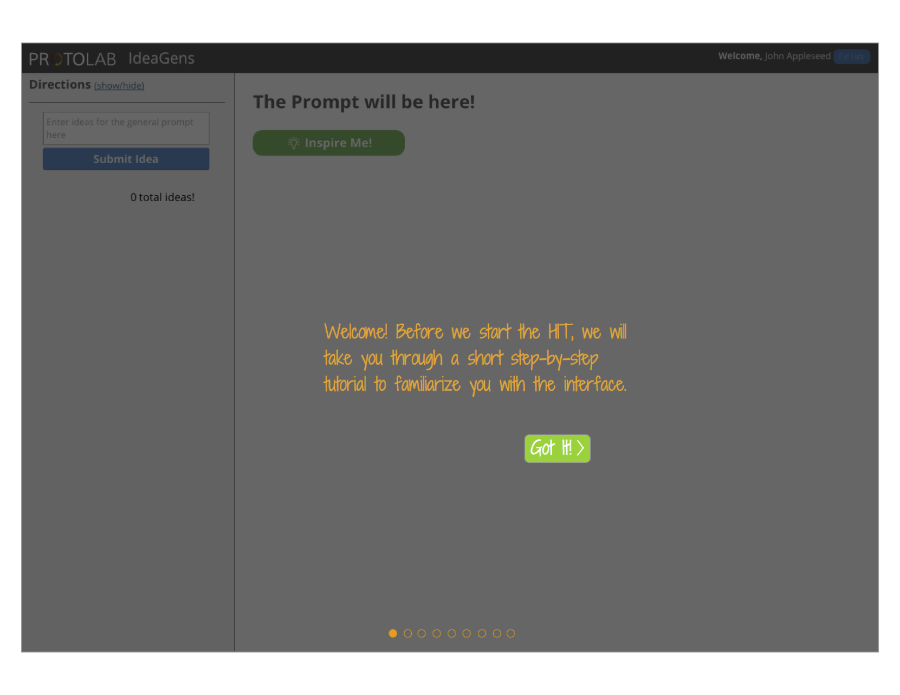

IdeaGens
Fall 2014
- Toolkit:
- Adobe inDesign /
- Sketch (Bohemian Coding) /
- MongoDB
- Usability Testing
- Sketching
- Ideation
IdeaGens is project within Carnegie Mellon's Prototype Lab. IdeaGens is a social ideation system for guided crowd brainstorming. IdeaGens divides the crowd into ideation and synthesis tasks, and enables efficient data-driven facilitation of the crowd’s ideation. A dedicated facilitator who guides exploration of the solution space is a common and effective strategy for optimizing ideation in face-to-face brainstorming, but has not yet been explored in computer-supported crowd ideation. IdeaGens is here to solve that problem.
I am a web designer and a developer for the research project. As an interaction designer, I must understand the underlying data structure to design and create sketches and wireframes for main screens and components. As a developer, I contribute to the backend code for the system.
We are currently in the process of performing user experiments with treatment and control groups. Below are the mockups I created for the tutorial that all crowd workers in the treatment group go through prior to entering the main brainstorm. I also designed the control group tutorial which is very similar. After feedback and discussion, I implemented our final version of the tutorial pages and integrated them into the system. The interface behind it was also designed and styled by me. Click the image to see the entire tutorial flow.
